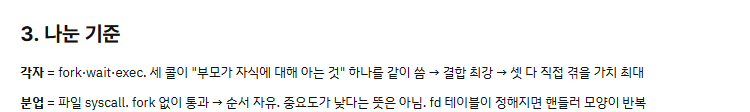
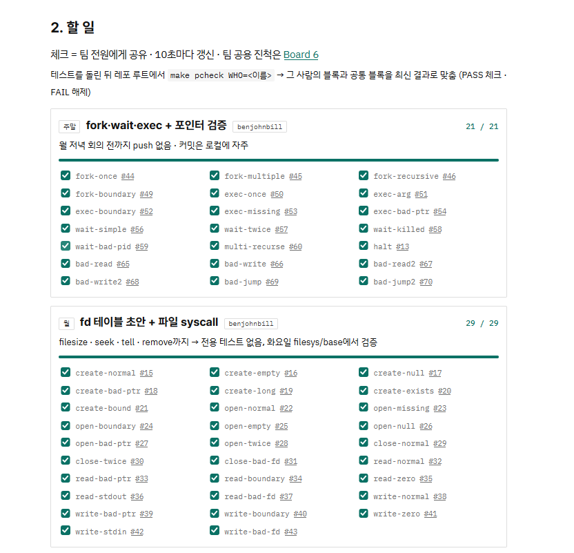
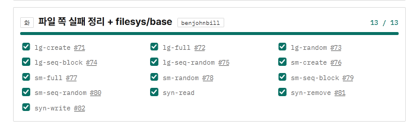
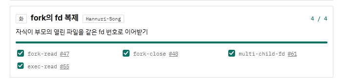
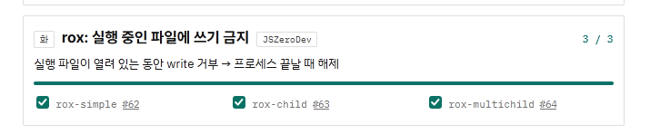
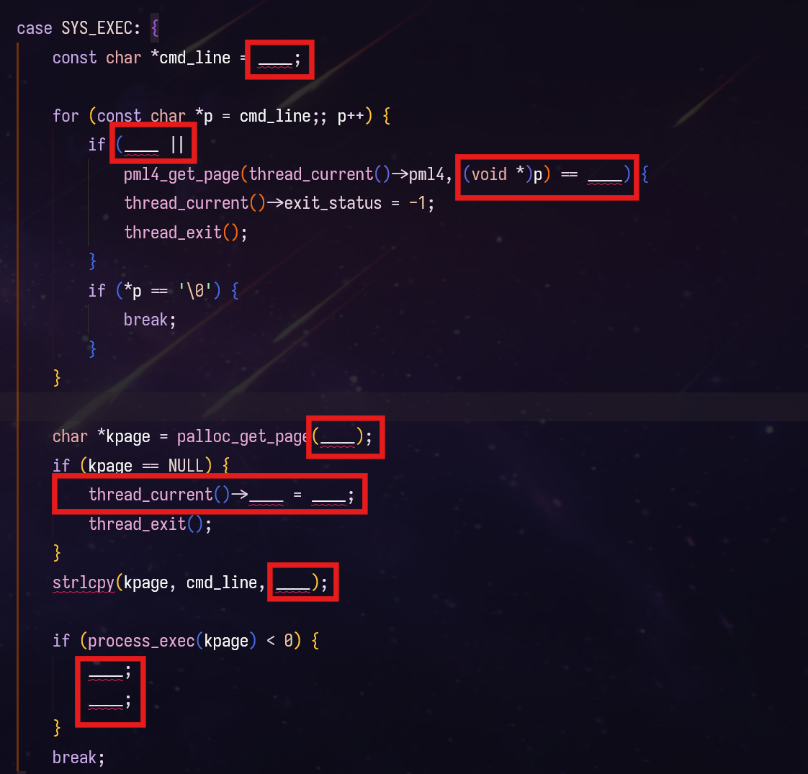

github.com/benjohnbill/pintos-userprog · PR #104 – #118목 – 수
지도 · 다음
Convention → make ptest와 보드
첫날 칠판 지도토 – 월 · 10.17 – 10.19
토 – 월 · 10.17 – 10.19
테스트를 돌려야 해서 도구를 만들었다: 각자 브랜치에서 make ptest, 결과는 분업표로.


0 / 0
각자 자기 브랜치에서
benjohnbillbenjohnbill→ make ptest → 내 블록 체크Nurinuri→ make ptest → 내 블록 체크승영JSY-*→ make ptest → 내 블록 체크
분업표 한 장을 셋이 같이 본다 → 누가 어디까지 됐는지 회의 없이 보인다
회색 = 여러 사람 코드가 함께 필요한 테스트
icount
QEMU가 실제 시간 대신 명령 수로 시간을 센다. 여러 개를 동시에 돌려도 결과가 흔들리지 않는다.
SHIFT
명령 하나 = 2SHIFT ns. 3–8로 바꿔 돌리며 경쟁 상태를 찾는다.
JOBS
코어 수만큼 QEMU를 동시에 띄운다 (-j$(nproc)).
TIMEOUT
테스트 하나의 제한 시간. 기본 5초, 느린 노트북은 10초.
Makefile · scripts/plan-check.py · team-plan.html토 – 월
지도 · 다음
Convention → CONVENTION.md 세 구역
첫날 칠판 지도Convention · CONVENTION.md
Convention · CONVENTION.md
모양은 저장할 때, 이름은 경고로, 짓는 법은 사람과 AI가 맞췄다.
CONVENTION.md · .clang-format · .clang-tidy · PR #110목 – 수
지도 · 다음
분할 → 기능 단위로 합치기
첫날 칠판 지도화 · 수 · 10.20 – 10.21
화 · 10.20
화요일 분장은 테스트 묶음이었고, 실제 코드는 기능을 따라 나뉘었다.
분업표 · 화요일에 나눈 테스트
실제로 짠 것 · 화 – 수 커밋

benjohnbill (나)유저 page fault는 exit(-1)로 (page_fault(), bad-* 6개) · fd 이름을 CONVENTION에 맞춤 · filesize · tell · read 버퍼 쓰기 권한 검사 + 테스트 read-code-seg 추가 · 종료 시 fd 정리 중복 제거

Nurifd_entry fd 테이블 기반 · open · close · read · fork 때 fd 복제 · 종료 시 fd 정리 · seek · create

승영실행 파일 쓰기 금지 연결 (rox) · remove
team-plan.html 화요일 · git log 10.20 – 10.21화
지도 · 다음
분할 → 공통: 다 짜 보고 리뷰했나
첫날 칠판 지도마무리
화 – 수 · 10.20 – 10.21
원래 계획의 마지막은 분할 → 공통: 남이 짠 부분까지 다 짜 보고 리뷰하기. 시간이 없어 혼자 시작에서 멈췄다.

rewrite/fwe · SYS_EXEC를 빈칸으로 뚫고 다시 채우기
화요일 밤 · 6시간 타임어택 · args-passing 다음부터
1완료record와 최소 wait/exit
2완료exec
3중간까지fork
4미구현wait
5못 함그 뒤의 syscall
rewrite/fwe · 로컬 브랜치화 – 수
마무리
다음주 개선점
누가 짠 코드든 합칠 수 있도록 팀 활동을 구성하고자 했다.
그러나 팀적인 통일과 개인의 이해도는 완전히 다른 영역이었다.
다음주에는 원리와 실패 원인을 모두 명료하게 설명할 수 있도록 공부하려고 합니다.
감사합니다
2026-10 · WEEK 088팀 · 조진근
참고 시간 초
단축키
→ · Space
다음 단계, 마지막 단계 뒤에는 다음 슬라이드
←
이전 단계, 단계가 없으면 이전 슬라이드
Home · End
처음 · 마지막 슬라이드
N
발표자 노트 열고 닫기
E
편집 모드: 글자나 노트를 눌러 고치기
Tab
편집 중: 고르던 글자의 크기 버튼으로 (글자 크기, 상자 너비) · ← → 고르기 · Esc 돌아가기